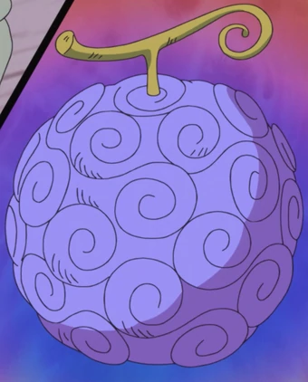

Synopsis
L'histoire de One Piece se déroule dans un monde fictif dominé par les océans, où certains pirates aspirent à une ère de liberté et d'aventure connue comme « l'âge d'or de la piraterie »
Cette époque fut inaugurée à la suite des derniers mots prononcés par le roi des pirates, Gol D. Roger, surnommé Gold Roger avant son exécution. Roger annonce au monde que ses habitants étaient libres de chercher toutes les richesses qu'il avait accumulées durant sa vie entière, le « One Piece. »
Gol D. Roger
Vingt-deux ans après l'exécution de Roger, l'intérêt pour le One Piece s’effrite. Beaucoup y ont renoncé, certains se demandent même s'il existe vraiment. Même si les pirates sont toujours une menace pour les habitants,
la Marine est devenue plus efficace pour contrer leurs attaques sur les quatre mers : East Blue, North Blue, West Blue et South Blue.
Pourtant, ce changement n'a pas dissuadé Monkey D. Luffy, un jeune garçon, de vouloir devenir le successeur du légendaire Roger. Il va ainsi partir à l’aventure en se donnant comme premier objectif de créer un équipage afin de rejoindre la mer de Grand Line, où la fièvre de la « grande vague de piraterie » continue de sévir, et où de nombreux grands noms de la piraterie sont à la poursuite du One Piece, supposé être sur la dernière île de cette grande mer, Laugh Tale.
Shanks le Roux
Luffy part à l'aventure après sa rencontre avec Shanks le Roux, le capitaine d'un navire de pirates qui a passé un an dans son village et l'a sauvé d'un monstre marin en sacrifiant son bras gauche.
Depuis, Luffy porte son chapeau de paille qu'il lui a offert pour marquer la promesse de devenir un grand pirate. Ce chapeau deviendra donc le symbole de son équipage.
C'est à cette époque qu'il mange un fruit du démon que détenait Shanks : le fruit du Gum Gum, et qui rend son corps élastique.
Les fruits du Démon une fois mangés donnent des capacités spéciales à leur détenteur, qui perd par la même occasion toutes ses forces lorsqu'il est immergé dans l'eau de mer.
Luffy et son équipage feront de nombreuses rencontres qui renforceront leur amitié et élargiront leurs équipages. Mais ils devront se confronter aux équipages pirates prônant violence et pouvoirs, ainsi qu'à la Marine et ses soldats, garants de la justice.
Fruit du demon
